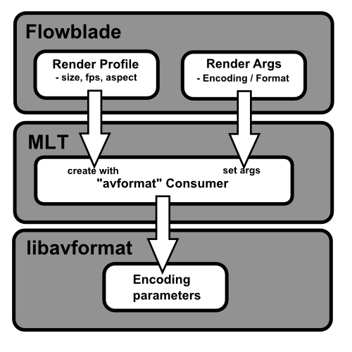

This section describes the minimal workflow for making a movie using only a single track.
Rendering
In Flowblade there are two ways to render output:
- Render Panel in the top left notebook in the main window.
- Batch Render Queue application that can launched from Render menu.
Almost all the encodings available for FLOSS applications can used in Flowblade.
Folder select button
Select folder to place the output file in.
Name entry widget
Set the name of the output file.
Type drop down menu
Select between rendering with user defined parameter or use preset render params and file types.
Presets drop down menu
Select preset rendering params and file type.
Use Project Profile check box
Uncheck to select some other then project profile to used for rendered video.
Profile drop down menu
Select project profile for rendering
Encoding / File Type drop down menu
Select encoding and container format for rendering.
Bitrate drop down menu
Select bitrate for rendering.
Render Using Args check box
Rendering using arguments set in text edit area below.
Args text area
Set arguments for rendering.
Load Selection button
Load rendering arguments defined in left panel into args text area.
Ext entry widget drop down menu
Set file extension for args rendered file.
Open File In Bin check box
Open the rendererd file as media item in current bin.
Render Range drop down menu
Select between rending the complete program or the marked range.
Render button
Renders timeline into a file.
- Press Render Button to begin rendering.
- A Render Window will open displaying information on file path of render file, estimated time left, render time and a Progress bar widget.
- After rendering is complete, Render Window will close automatically.
Flowblade offers a dedicated Batch Render Queue application. Batch Render Queue is a separate application to Flowblade and runs on different process, so it is possible to close Flowblade without affecting ongoing renders.
Render queue is a persistent data structure of render items on disk. Each item consists of a Project file and saved render parameters. Users can add render items to render queue and then render the whole queue without any further user input.
- Press To Queue button in Render tab.
- Select Render->Add to Batch Render Queue... item from menu
- Open Batch Render Queue application by selecting Render->Batch Render Queue from menu.
- Press Reload Queue button to display render items that have been added to render queue since it was opened.
- Use Delete Selected and Delete Finished buttons to remove items from queue.
- Use checkbox widget in the Render column to select which items will be rendered.
- Press Render button to begin rendering.
UI actions:
- Right Mouse Click render item to show render item context menu.
- Save Item Project As... allows th user to save the Project file of the render item into same other location
- Render Properties displays the render properties that were set when the item was added to render queue.
- Delete deletes the item from queue
Flowblade Movie Editor is a Python application interfacing to MLT multitrack media framework.
Other video editing applications build on top of MLT include OpenShot and Kdenlive.
MLT uses C-library libavformat(FFMpeg) to render output files, and rendering is defined by setting FFMpeg encoding parameters.
These parameters are delivered from Flowblade Movie Editor to MLT by creating a "avformat" Consumer object for
a given Render Profile, and then setting its Rendering Args.
These latter arguments are exactly the same which are used when using FFmpeg to encode video files.
Rendering arguments for encoding different types of video files are pre-packed and can be selected using
Encocing / Format and Quality Drop Down Menus. Arguments can be refined
by checking Render with args Checkbox and changing args values and/or adding/removing args.
Any kind of video files supported by the installed version of MLT can be encoded by creating a user defined
Render Profile and setting its Rendering Args. Google for FFMpeg encoding to find Args combinations for different video files.
Search web for information on encoding files with FFMpeg to get examples of Rendering Args that can be used.
